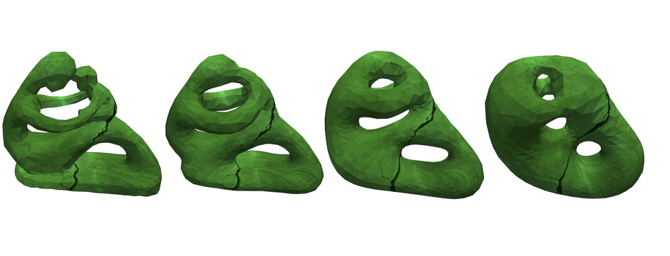

Modeling the p-Willmore Flow of Surfaces
 Some of the most interesting partial differential equations involve a domain which is determined as part of their solution. Such equations are frequently used as models for fluid flow and other dissipative processes, and see application in various areas from biology to computer graphics. Geometrically, many examples of evolution equations arise as gradient flows, which describe the motion of an abstract or immersed surface by the \(L^2\)-gradient of a particular energy functional. Besides their obvious aesthetic character, such flows give a quantifiable way to change the geometry of a surface – something that is useful for both theoretical and applied purposes. For example, G. Perelman’s proof of the famous Poincare conjecture relies heavily on properties of the Ricci flow, while the Willmore flow finds utility in surface reconstruction and de-noising.
To extend as well as unify some of the work done so far on the computational aspects of gradient flows, our work presents a finite element model for the p-Willmore flow with conformal penalty. Building on ideas from previous work by Gerhard Dziuk and others, this model can be used to study geometric evolution equations including the mean curvature flow (\(p=0\)) and Willmore flow (\(p=2\)) for surfaces which are immersed (potentially with self-intersections) in \(\mathbb{R}^3\). Moreover, the model in “Computational p-Willmore flow with conformal penalty” is amenable to constraints on surface area and enclosed volume, and includes a novel post-processing procedure which leverages a relationship from conformal geometry to regularize the evolving mesh at each time step. While this regularization was primarily designed to prevent the flow from stopping artificially before reaching a minimizing configuration, it is also interesting on its own, and is seen to improve the quality of even very irregular triangle meshes. Moreover, some analysis of the p-Willmore flow system is presented in this work, and it is shown that the p-Willmore energy is appropriately discretized and continually decreasing along the flow.
Future work in this area will investigate subtleties of the temporal discretization, as well as the possibility of building strict conformality into the p-Willmore flow as a constraint. The algorithms developed here should also find applications to problems in other areas such as protein modeling and the study of fluid-structure interactions.
Relevant Publications
Vikash Chaurasia, Eugenio Aulisa. Computational p-Willmore Flow with Conformal Penalty. ACM Trans. Graph. 39, 5, Article 161 (September 2020), 16 pages. DOI:https://doi.org/10.1145/3369387. Available here.